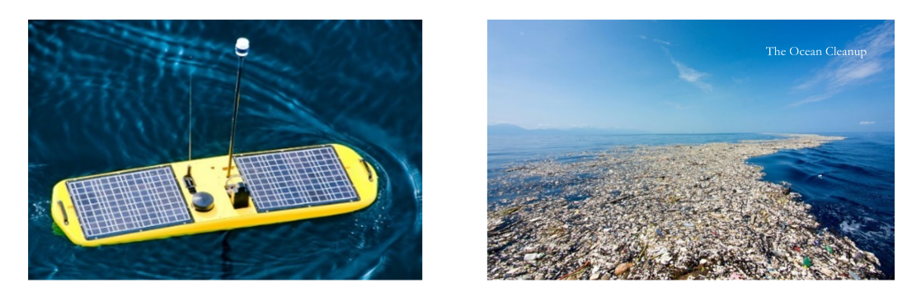
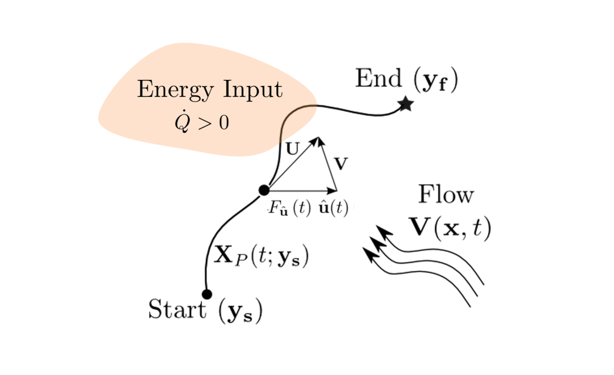
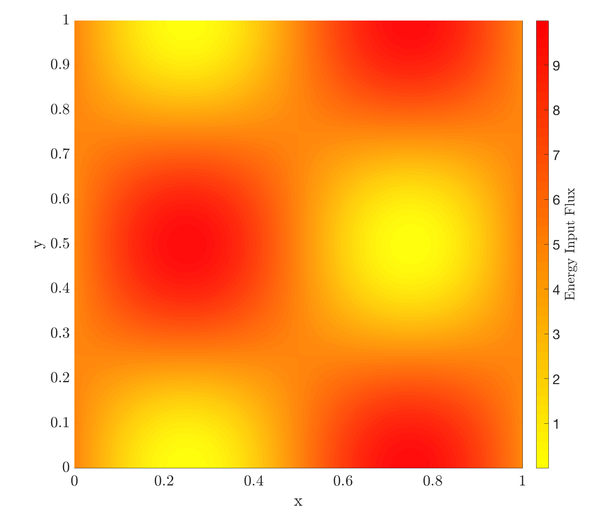

Time-Optimal Path Planning under Harvesting Constraints¶
Collaborators: Manan Doshi and Prof. Pierre Lermusiaux
Motivation¶

The past decades have seen a growing use of sea surface craft (sailboats, vessels, ships) and autonomous vehicles (propelled AUVs, ocean gliders, solar-vehicles, etc.) in marine applications ranging from military surveillance to scientific data collection. Central to the effective operation of all autonomous surface and underwater vehicles is efficient and accurate motion control which falls under the purview of path planning. Path planning, in the most general sense, corresponds to a set of rules to be provided to an autonomous robot for navigating from one configuration to another in some optimal fashion. The metric for optimality, however, is problem-dependent and varies based on the user-specified objective, such as minimizing travel time, reducing energy consumption, or maximizing vehicle safety.
Increasingly, having autonomous vehicles collect/harvest external fields from the environment has grown in relevance. The applications in which this is important are numerous. For instance, in the case of energy optimal path planning, where long endurance and low power are crucial, it is important to be able to optimally harvest energy (ex. solar energy) along the way and/or leverage the environment (ex. the velocity field and currents) to reduce energy expenditure. This idea of optimal field collection extends further than just energy and is applicable to problems such as path planning to optimally collect marine plastic pollution or oil spills as well.
For this project, our research goal was simple: to derive exact time-optimal control equations that optimally account for harvesting environmental fields.
Our Research¶

The figure above illustrates the key parameters of the problem we aimed to solve (shown here for energy collection, though our methodology is equally applicable to harvesting other fields such as plastic or oil). Our objective was to optimally navigate a vehicle from a specified starting point to a destination in minimal time while meeting the constraint of collecting a specified minimum amount of the external field.
This task is complex due to two main factors: (1) the external velocity field, which may be dynamic and affects the vehicle's movement, and (2) the harvesting process, which must account for the dynamic nature of the background field.
Using principles from optimal control theory, we developed PDE-based schemes that incorporate harvesting as a constraint within the path planning process. These schemes yield globally optimal solutions. The example below demonstrates one of the problems we successfully addressed using this approach.
Sample Case - Time Optimal Path Planning with Energy Constraints¶

This case considers the problem of path planning under energy constraints. We consider the situation where the autonomous vehicle travels at its fixed maximum speed but has freedom to control its heading when navigating. From a given start point, we must additionally plan a path in a highly dynamic flow field to intercept a moving target point (right subfigure in Fig.3). We can further harvest energy from some static input energy field (ex. a solar input field) and the input flux distribution is shown in the left subfigure of Fig. 3. The vehicle starts with 0.325 units of energy and it must reach the target with at least 0.6 units of energy in a minimal amount of time. Note also that since the vehicle speed is constant, its energy expenditure rate is assumed to be a fixed constant in this problem.
Fig. 4 shows the optimal path as returned from our approach for this problem at hand. We see that the vehicle stays for as long as it can in regions with high energy input flux and it uses the external flow field to its advantage in order to reach the target quickly. It is important to reiterate that our PDE-based scheme is able to find the global optimal solution to this path planning problem. No other path exists that can reach the target in less time while also having 0.6 units of energy when reaching the target.